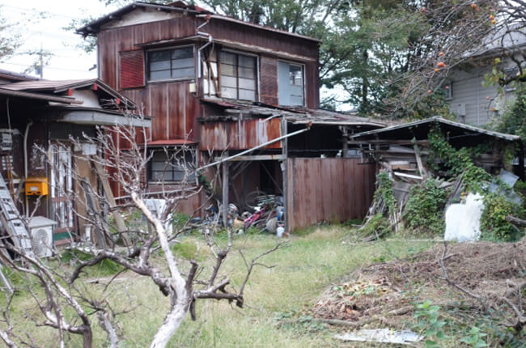

- トップ
- 空き家でお困りの方【空き家相談】
空き家管理や空き家の売却に関するご相談を承りますEmpty house
「所有している家が長年空き家になっている」「空き家を持て余している」といったお悩みをお持ちなら、ぜひ山口市の株式会社アライブにご相談ください。当社では、空き家管理や空き家の売却に関するご相談を承ります。どのようなことでもお気軽にご相談ください。
空き家をそのままにしておくと危険

所有する物件を何年も空き家のまま放置し続けていると、様々なリスクが生じる可能性があります。中には事件に巻き込まれたり、高額なお金を支払うことになってしまったりするケースもあるのです。空き家を放置しておくデメリットを確認して、空き家対策を始めましょう。
建物が劣化する

空き家は換気がなされていないことで湿気が溜まり、カビやホコリが随所に発生し、シロアリ被害に遭うこともあります。また、外壁や屋根の塗装が劣化すると、建物の防水機能が失われ、雨水や湿気が外壁材や屋根材の内部にまで浸透し、それが建物の躯体の老朽化を招くことも。劣化が進行してしまうほど空き家を放置すると、もうその物件に住んだり賃貸物件として利用したりすることもできなくなり、再利用しようと思ったら大規模な修繕が必要になります。
資産価値が下がる
資産価値を考えるときに大切なのが「法定耐用年数」です。家の種類のよって耐用年数は異なり、法定耐用年数が建物の資産価値を判断する基準の一つとなります。
建物の法定耐用年数
| 建物の種類 | 法定耐用年数 | ||
|---|---|---|---|
| 木造・合成樹脂造り | 22年 | ||
| 木骨モルタル造り | 20年 | ||
| 鉄骨鉄筋コンクリート | 47年 | ||
| レンガ造り・石造り・ブロック造り | 38年 | ||
| 金属造り | 骨格材の厚み | 4mm～ | 31年 |
| 3～4mm | 27年 | ||
| ～3mm | 19年 | ||
建物の資産価値は、建物を建てた時から年々下がっていきますが、建物を管理していないと劣化が進み、さらに資産価値を下げてしまうことになります。空き家を定期的にメンテナンスしてキレイな状態を保っていれば、放置しておくよりも資産価値は下がりにくくなります。
固定資産税が発生する
物件や土地には、毎年固定資産税が発生します。固定資産税には、土地に建物が建っているだけで税額が最大6分の1になるという優遇措置があります。
固定資産税の優遇措置の例
評価額が4,000万円の土地では、優遇措置を適用しない場合の固定資産税は560,000円。一方、優遇措置を適用した場合の固定資産税は93,000円であり、467,000円もの差があります。
| 固定資産税 | |
|---|---|
| 優遇措置適用 | 93,000円 |
| 優遇措置非適用 | 560,000円 |
空き家を放置し何も活用していなければ、ただ税金を払い続けているだけで負の資産を持っていることになります。また、平成27年に制定された「空き家対策特別措置法」により、特定空き家」に認定された建物は固定資産税の優遇措置が受けられなくなる可能性があります。
空き家をそのままにしておくと、固定資産税が最大で6倍にまで上がってしまう恐れがあるのです。
特定空き家に指定されてしまう条件
- 倒壊の恐れがある物件
- 衛生環境に著しく問題がある物件
- 長期間管理されておらず景観を損ねている物件
- そのほか、周囲の生活環境に悪影響を及ぼす物件
ご近所トラブルや犯罪に巻き込まれる
庭木や雑草が伸び放題の庭は害獣が集まりやすく、野良猫やネズミの棲みかとなってしまい、ニオイや鳴き声、排せつ物などで異臭や騒音といったトラブルに発展することがあります。また、隣家に庭木が侵入して迷惑をかけることもあります。
また、荒れ放題の庭やポストに郵便物が溜まった家は誰から見ても空き家だとわかります。そのような場所は、不法侵入や窃盗、放火などのリスクが高まり犯罪の温床になってしまう可能性もあります。
空き家の解体について
使っておらずただ放置しているだけの空き家は無用の長物です。いっそ解体して更地にしてしまったほうが、活用方法の幅が広がります。しかし、解体工事をするにも費用がかかるもの。費用の負担が厳しく解体を躊躇されている方もいるのではないでしょうか。
実は老朽家屋の解体を実施する場合、一定の条件を満たしていれば自治体から解体費用の助成金が受けられることがあります。詳しくは各自治体に問い合わせる必要がありますが、こちらではその条件例をご紹介します。
助成が受けられる対象となる空き家の条件例
- 市内にある居住用建物である
- 周囲への危険や悪影響がある空き家である
助成を受けるための条件例
- 空き家などすべてを解体・撤去し、更地にすること
- 市内の業者が解体工事を行うこと
- 市税の滞納がないこと
空き家・土地の活用方法
空き家・土地を有効活用する方法は様々です。どのように活用すべきかは、その不動産の立地や地域特性などにより異なります。まずはどのような活用方法があるのか確認しておきましょう。
空き家活用方法
| 賃貸に出して収入を得る | 空き家活用の代表的な方法が、賃貸物件として利用することです。賃貸に出すことで収入を得られるのはもちろん、空き家を使ってもらうことで不動産の維持管理・劣化防止にもつながります。 |
|---|---|
| 売却する | 売却して利益を得る方法です。土地や建物を現状のままで売却できればよいですが、難しい場合はリフォーム・修繕をしてから売却するか、建物を解体して更地にして売却するといった方法があります。 |
| リフォームして活用する | 空き家をリフォームして、自宅や別荘として活用する方法です。賃貸用にリフォームして、収入を得ることも可能です。 |
| きちんと管理して現状維持 | 放置せず定期的に掃除や通水・換気などを行って管理する方法です。「空き家を使う予定はないが手放したくない」という場合におすすめです。所有者様自身での管理が難しい場合には、不動産会社に管理代行を依頼することもできます。 |
土地の活用方法
| マンション・アパート・戸建ての賃貸経営 | 所有する土地にマンション・アパート・戸建てを建築して賃貸経営を行う方法です。長期間にわたって安定収入が得られ、固定資産税の減額が見込めます。ただし、初期投資は高額になります。 |
|---|---|
| 駐車場・トランクルームの経営 | 駐車場やトランクルームとして活用する方法です。初期投資が少なく済み、利益率もある程度は見込めます。ただし、料金未払いなどのトラブルに巻き込まれるリスクはあります。 |
| 福祉施設の建築 | 福祉施設を建築する方法です。社会福祉法人の認可が得られれば、固定資産税は非課税の対象となります。また、地域社会に貢献することにもつながります。 |
| コンビニ、店舗、商業施設などの建築 | 商業施設は、一般的な住宅よりも賃料を高く設定できるため、その分多くの収入が期待できます。ただし、固定資産税の優遇措置はないため、その分税額は高くなります。 |
当社は山口市で仲介売却や不動産買取を行う不動産会社です。山口市の豊富な不動産売買実績があり、当社スタッフが自らの目と足で探し出した独自の情報をもとに、最適なご提案・アドバイスをしています。親身になってご相談を承りますので、空き家でお困りの方はどうぞご相談ください。